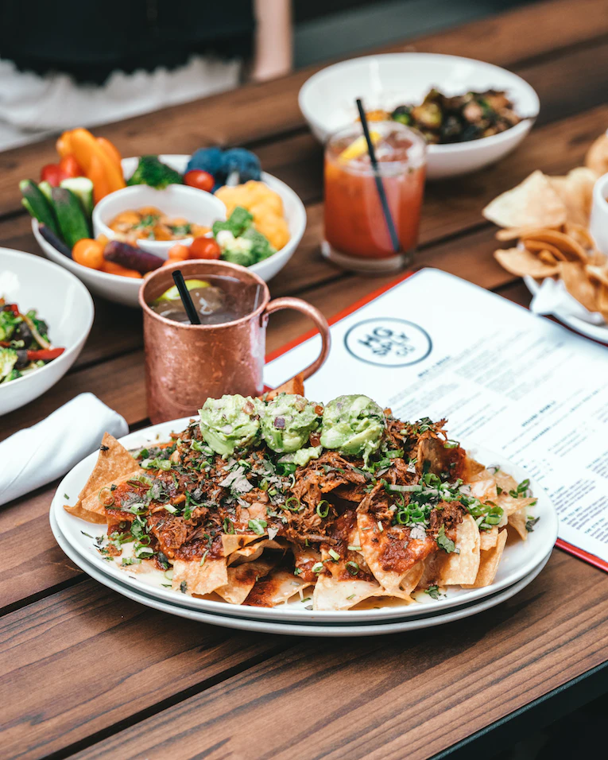

We all admit that nachos are a great treat to the palate but a soggy plate of nachos can quickly ruin it for us. This recipe will help you avoid just that and will allow you to enjoy a delicious plate of nachos for any occasion.
This recipe allows you to have a variety of protein as well as topping options and best of all it is quick and easy to prepare. The versatility of a nacho dish can be changed to match anyone’s appetite and as for this recipe, I will be using my favorite beef and bean topping.
combine all of the spices in a small bowl
Heat the vegetable oil on medium-high heat until it begins to shimmer. Add the ground beef to the pan and season it with all of the taco spice blend. As the meat cooks, use a spoon to break the meat up into crumbles.
Cook for about 8 minutes until the meat has browned and drain the fat using a colander.
Return the meat to the pan and add the refried beans and the water. Heat the mixture until the beans are smooth and warmed through. Reduce the heat to low and keep the beef-bean mixture warm while you prepare the chips.
Toasting the chips help us to avoid soggy nachos. On a 13x18-inch oven-safe platter or sheet pan, arrange the tortilla chips in a single layer, overlapping them slightly. Toast the chips in the preheated oven for 5 minutes, or just until you begin to smell their aroma.
Carefully remove the pan from the oven and top with one-half of the shredded cheese. Allow the heat from the chips to melt the cheese slightly before topping the chips with the beef and bean mixture.
Sprinkle the remaining cheese over the beef and return the pan to the oven for 5 minutes, or until the cheese has fully melted.
Top the nachos with the pico de gallo, chopped cilantro, jalapeño slices, or any of your preferred toppings. Serve hot.
Return to the top of the page.